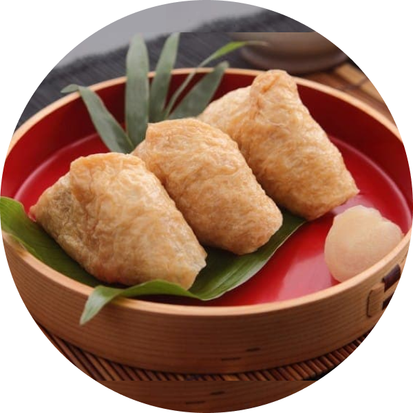

稻禾壽司
日本全國各地的稻荷神社，多由狐狸取代狛犬的位置，成了神明的使者，而且供奉著油炸過後的豆皮或稻荷壽司。 據說，自古以來狐狸便喜歡吃油炸老鼠，但由於殺生為禁忌，是以改用大豆製成的豆皮去油炸來供奉。之後就能收到來自稻荷神的恩惠，再將豐收的米塞進油炸豆皮裡。這也是如今稱為稻荷壽司、稻荷、狐壽司等。初午，指的是二月最初的午日。在日本這是與稻荷神信仰結合，祈求當年豐收的傳統習俗。在栃木縣等地區，這一天會吃這種特別的食物，可以說是在初午這天最不可或缺的應景食物。